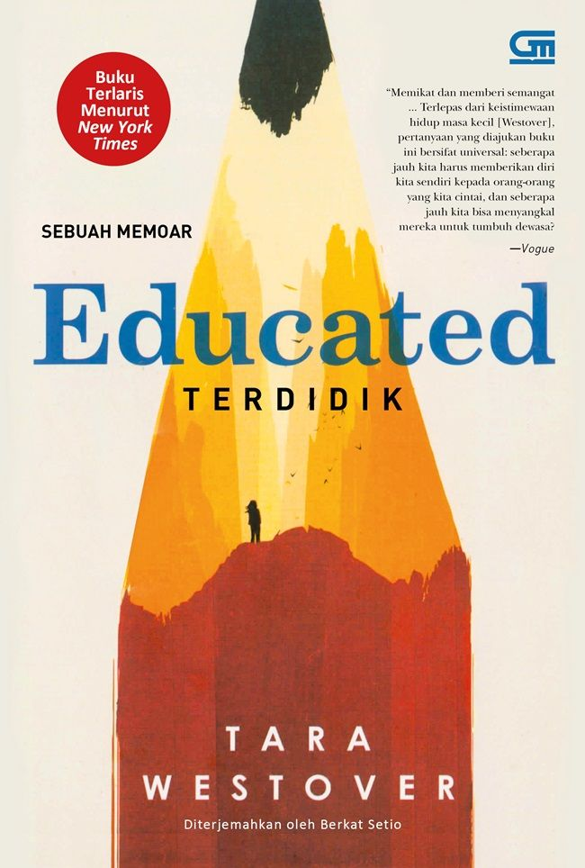

Educated adalah memoar Tara Westover yang menceritakan perjalanan hidupnya dari masa kecil di keluarga terpencil hingga berhasil menempuh pendidikan tinggi di universitas ternama.
Tara tumbuh tanpa pendidikan formal dan hidup dalam lingkungan keluarga yang sangat tertutup. Namun, keinginannya untuk belajar membawanya keluar dari keterbatasan dan membuka jalan menuju dunia yang lebih luas.
Buku ini menggambarkan kekuatan pendidikan, keberanian untuk berubah, serta perjuangan seseorang dalam menemukan identitas dan kebebasan berpikir.